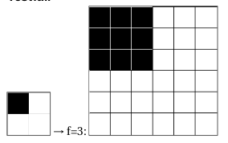

by Daniel Glinka
koordinaten[3] = wert;
wert = koordinaten[3];
for(int i=0; i < anzahlWerte; i++) {
koordinaten[i] = initialerWert;
}
int[] koordinaten; // Deklaration
// Speicher Allokierung mit 15 Elementen
// Danach hat jedes der Elemente den Wert 0
koordinaten = new int[15];
int[] koordinaten = new int[15]; // alles in einem Schritt
// Deklaration und Allokierung mit festgelegten Werten
String[] farben = {"rot", "gelb", "grün"}
// Zweidimensionaler Array
int[][] koordinaten = new int[anzahlX][anzahlY]
length
int anzahlElemente = koordinaten.length;
Schreibe eine Funktion, die ein Array mit verschiedenen
int-Werten übergeben bekommt und daraus die
durchschnittliche Anzahl an Kilometern zurückgibt, die wir mit
einer Tankfüllung fahren können.
[123, 134, 120, 122] -> 124.75
// Funktion zur Berechnung des durchschnittlichen Verbrauchs
// An die Funktion wird ein Array mit Integer-Werten übergeben,
// die die gefahrenen Kilometer bis zum nächsten Tankstopp
// enthalten. Die Funktion gibt den Durchschnittswert als
// Fließkommazahl zurück.
// Erstelle eine Funktion averageFuelComsumption welche den Array
// kilometersPerTankful als Parameter erhält
/* ... */
// Initialisierung der Variablen averageConsumption und
// sumKilometers für die Berechnung des Mittelwerts
/*...*/
// Summiere alle Kilometer
/*...*/
// Teile durch Gesamtzahl
/*...*/
// Rückgabe des Ergebnisses
/*...*/
// Startpunkt des Hauptprogramms
// Hier wird die implementierte Funktion zu Demonstrations- und
// Testzwecken aufgerufen.
// Erstelle die Funktion setup, welche das Ergebnis der
// Funktion averageFuelComsumption in der Console ausgibt
/*...*/
Programmiere eine Funktion, welche Wörter rückwärts schreibt. Dabei soll ihr ein Char-Array übergeben werden, welcher die Buchstaben rückwärts in der Konsole ausgiebt.
Hallo -> ollaH
length Variable (Referenz)
// Programmiere die Funktion printBackwards, welche keinen Rückgabewert
// hat und als Parameter einen char-Array erhält.
// Die Funktion soll den übergeben char-Array in der
// umgekehrten Reihenfolge in der Konsole ausgeben.
/*...*/
// Startpunkt des Hauptprogramms
// Hier wird die implementierte Funktion zu Demonstrations- und
// Testzwecken aufgerufen.
void setup() {
// Char Array mit Test Daten
char[] palindrom =
{'r', 'e', 'i', 'b', 'n', 'i', 'e', 'e', 'i', 'n', 'b', 'i', 'e', 'r'};
// Char Array mit Test Daten
char[] test = {'H', 'a', 'l', 'l', 'o'};
// Hier wird die Funktion printBackwards mit dem entsprechenden Parameter aufgerufen
printBackwards(palindrom);
printBackwards(test);
}
Digitale Bilder werden in der Regel durch Bildelemente, sogenannte Pixel, unterteilt und dargestellt. Jedes Pixel beschreibt dabei einen Farbton an einer festgelegten Stelle. Es ist also ein großes Array, in denen verschiedene Zahlen (die Farbwerte) gespeichert sind. Pixel werden meist quadratisch dargestellt. In dieser Aufgabe werden wir zwei Farben im Bild-Array speichern: schwarz und weiß. Eine typische Anwendung in Bildbearbeitungssoftware ist die Bildvergrößerung, welche wir hier programmieren wollen.
Programmiere ein Programm, welches einen zweidimensionales Array
um einen Ganzzahligen Faktor f vergrößert. Dieser Faktor ist
größer als 1. Das Array ist quadratisch und besteht aus
boolean-Werten. Stelle die Vergrößerung grafisch in
einer separaten Funktion dar.

// Erstelle die Funktion magnify, welche ein Zweidimensionales Boolean-Array
// input und einen Ganzzahlingen Vergrößerungsfaktor f als Parameter erhält.
// Der Rückgabetyp ist ebenfalls ein Zeidimensionales Boolean-Array.
/*...*/
// Erstelle die Funkion drawArray, welche ein Zweidimensionales Booles-Array
// als Parameter erhält und keine Rückgabetyp hat.
// Die Funktion soll das vergrößerte Array Grafisch darstellen.
// Die Rechteckgrößen sollen dabei durch die Ausgabefenstergröße bestimmt
// werden.
/*...*/
// Startpunkt des Hauptprogramms
// Hier wird die implementierte Funktion zu Demonstrations- und
// Testzwecken aufgerufen.
void setup() {
size(200, 200);
background(255);
boolean[][] input = {{true, false}, {false, false}};
drawArray(magnify(input, 1));
}
Schreibe ein Programm, welches Zeichenketten in Morsezeichen codiert.
Text:Wozu Worte drucken, es gibt doch Schreiber-> wozuwortedruckenesgibtdochschreiberErgebnis:.-- --- --.. ..- .-- --- .-. - . -.. .-. ..- -.-. -.- . -. . ... --. ..-... - -.. --- -.-. .... ... -.-. .... .-. . .. -... . .-.
".-", // A
"-...", // B
"-.-.", // C
"-..", // D
".", // E
"..-.", // F
"--.", // G
"....", // H
"..", // I
".---", // J
"-.-", // K
".-..", // L
"--", // M
"-.", // N
"---", // O
".--.", // P
"--.-", // Q
".-.", // R
"...", // S
"-", // T
"..-", // U
"...-", // V
".--", // W
"-..-", // X
"-.--", // Y
"--..", // Z
".----", // 1
"..---", // 2
"...--", // 3
"....-", // 4
".....", // 5
"-....", // 6
"--...", // 7
"---..", // 8
"----.", // 9
"-----" // 0
// Erstelle die Funktion getPosInAlphabet, welche die Position
// eines Buchstaben im Alphabet zurück gibt
// Schaue dir dafür die Funktoin indexOf in der Referenz an
/*...*/
// Erstelle die Funktion printMorseCode, welche den
// Morsecode für einen Eingabetext ausgibt.
/*...*/
// Startpunkt des Hauptprogramms
// Hier wird die implementierte Funktion zu Demonstrations- und
// Testzwecken aufgerufen.
void setup() {
printMorseCode("Wozu Worte drucken, es gibt doch Schreiber");
}
Created by with org